In this project, we implemented our pathtracing renderer by implementing rays and ray tracing, defining ray intersections with triangles, spheres, and bounding boxes, setting up the bounding volume hiearchy recursively, defining the BSDF for diffuse surfaces, estimating direct lighting via sampling through uniform hemisphere or importance, implementing global illumination through recursion and Russian Roulette termination, and implementing adaptive sampling. The main problems we encountered were with the bounding volume hiearchy and importance multiple bounce ray-tracing. For the BVH we were confused by how to update the min_t and max_t for the ray, but discovered that since this was covered by the triangles, with max_t, in the end we did not need to, and only had to implement an addional check on min_t and max_t. Our general debugging process involved analyzing the images and trying to think about what could have caused these bugs in code.
To generate our camera ray, we first got the position of the bottom left corner of our sensor in camera space, which is (-tan(0.5 x hFov), -tan(0.5 x vFov), -1). Since hFov and vFov are given in degrees, we had to convert it to radians to use in the tan function. From there, we add to its x and y components the converted position of the x, y coordinate in image space, which is x * width of the sensor and y * height of the sensor.
For raytrace_pixels, given the x, y coordinates in image space, we will generate a ray and sample its illumination for num_samples times. We use the gridSampler to allow us to choose a position in the pixel randomly and use that to generate the ray. After we have collected num_samples samples, we divide the accumulated illumination by num_samples to average it out before updating the pixel in the sampleBuffer.
To test for the triangle intersection, we followed the Möller-Trumbore algorithm. This involves getting two vectors along the edges of the triangle, getting the vector from a vertex on the triangle to the origin of the ray, and getting the cross products of the ray direction vector with one of the edge vectors and the cross product of the vector from the triangle vertex to ray origin and the other edge vector. Using these computations, we can get the time of the intersection and the barycentric coordinates of the point of intersection on the triangle. We check that if the time of intersection is within the min_t and max_t of the ray, then we can confirm that it is an intersection and we will fill out the intersection object. To test for the sphere intersection, we set up the quadratic formula to find the times of intersection. If the determinant is negative, then there is no intersection and we return false. Otherwise, we will get two times t1 and t2 from the quadratic equation. We take the lower time that is not negative and check if it is within the min_t and max_t of the ray. If it is, then we confirm that it is an intersection and fill out the intersection object.
|
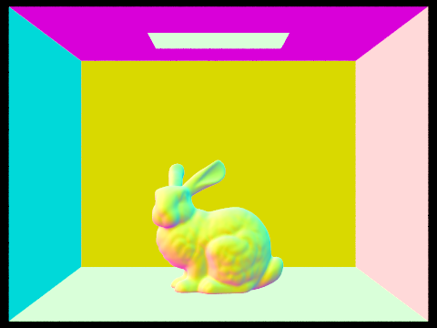 |
| 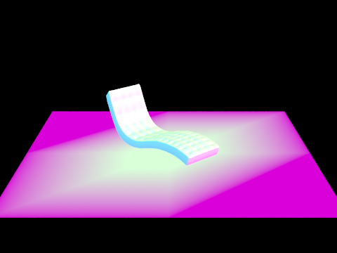 | 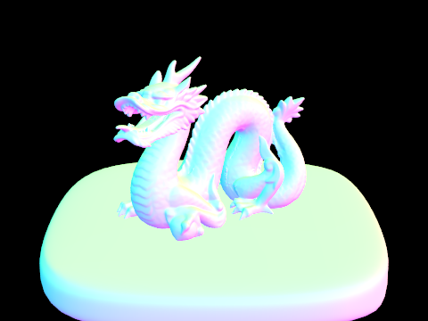 |
In part 2 we created the bounding volume hiearchy (BVH) in order to accelerate our raytracing. At first in the interest of completing the parts quickly we only split on the median object in the x direction. While this worked, it was not particularly efficient, as rays would pass through nearly half of the boxes, or all of them depending on perspective. We replaced this with a split that would find the direction that had the largest range of values, and split on the average position. Splitting in the largest direction helped the BVH fit more closely to the actual structure of the objects, and reduced the size of the boxes very quickly, enabling more of them to be missed by incoming rays that used to hit every box. Splitting on the average was also useful, so that clusters of primitives would end up in their own group, and not leave a box with a huge distance between triangles. Here are some larger renders that were done fairly efficiently with our code:
| 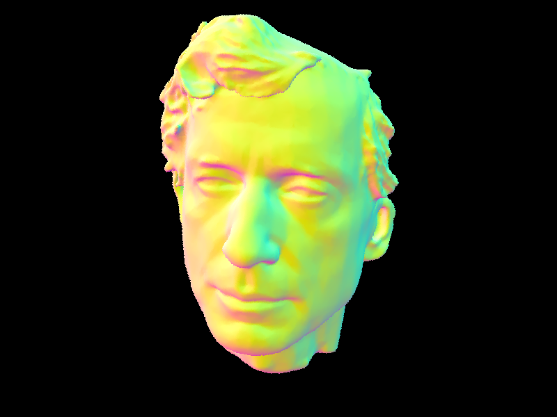 | 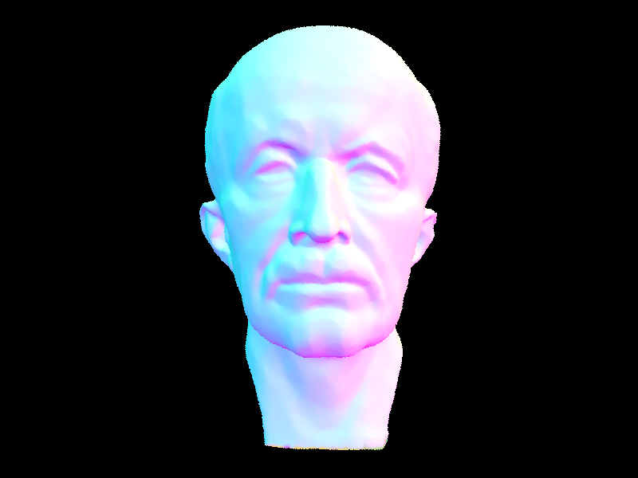 |
| 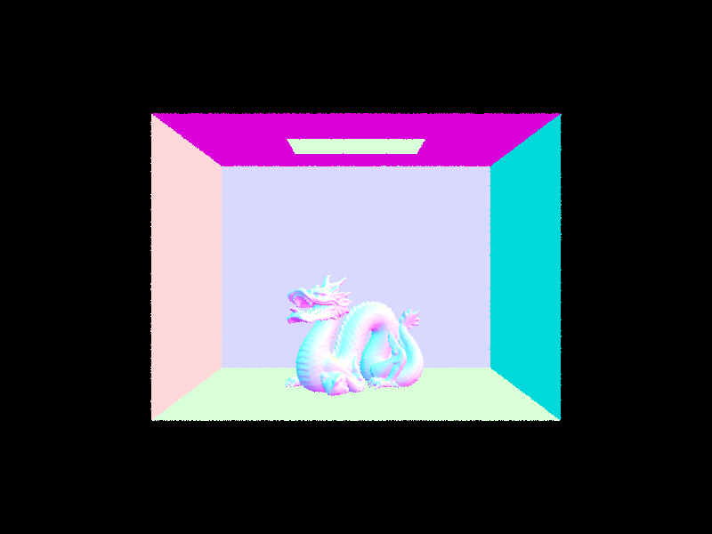 | 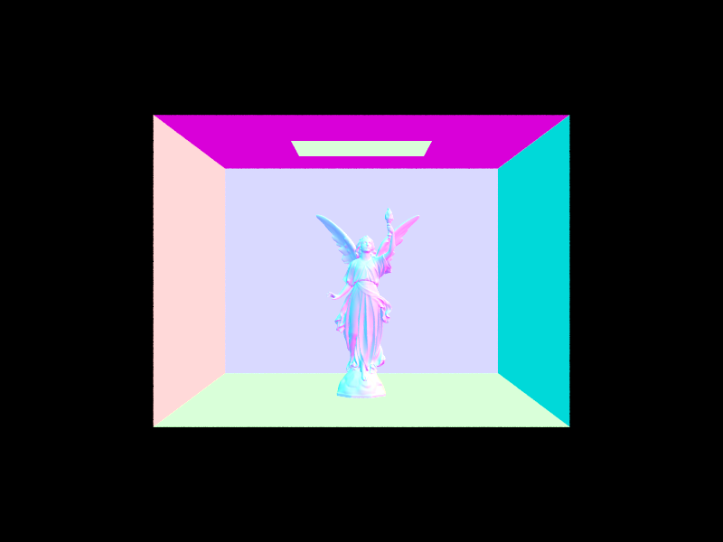 |
For speedup comparison we can see a significant improvement even in rendering just the cow.
| 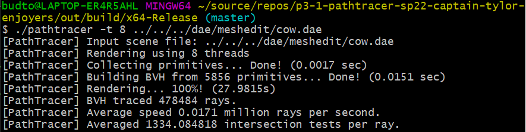 | 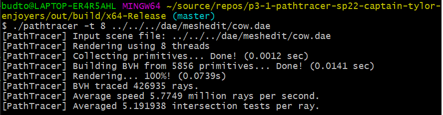 |
We can also see the slowdown here when rendering the beetle first with, and then without the BVH acceleration.
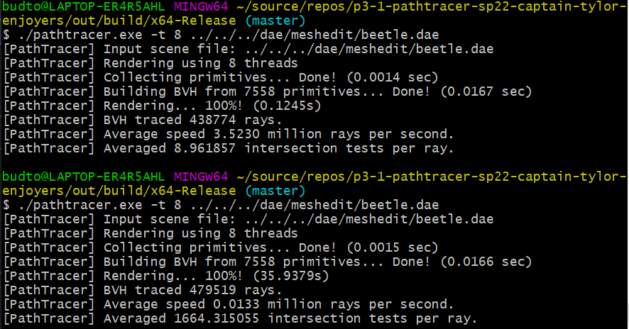Finally here are some pictures to show examples of our BVH structure. These were taken with my computer's default screenshot tool because the build in screenshot and rendering options do not allow for shots of non-renders.
| 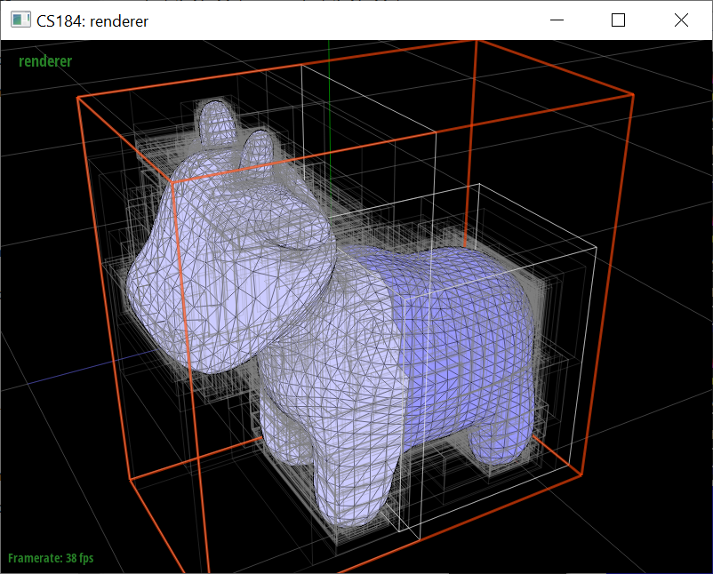 | 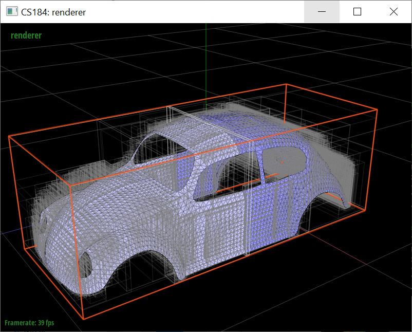 |
| 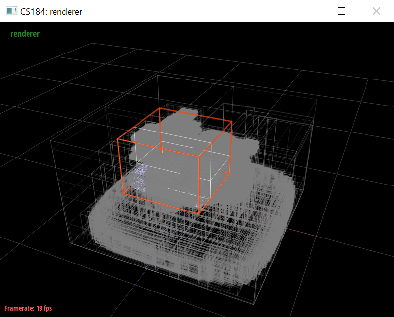 | 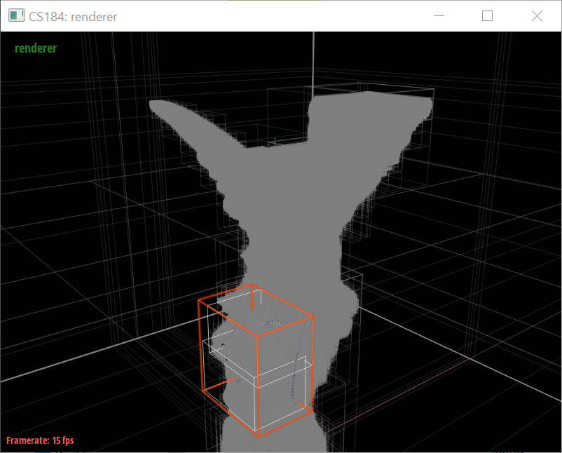 |
For hemisphere sampling, the pdf is always 1/2*PI and we can sample w_in randomly from the provided hemisphereSampler. We then create a new ray that starts at hit_p with direction o2w * w_in to represent the one bounce lighting. If the ray intersects something in this BVH, then we know the radiance is the zero bounce radiance at that intersection along this ray, and we set this vector to L. If there is no intersection, then L is 0. We also need to evaluate the BSDF at the original intersection with our w_on and w_in, and we can set this term to f. Lastly we need to get the angle of our new ray to the normal of the original intersection, which we can simply calculate as the dot product of the intersection normal and o2w * w_in, and we can call this cosTheta. Our final term that we add to L_out is f * L * cosTheta / pdf. We do this for num_samples times, and then average out the accumulated L_out by dividing it by num_samples before we return L_out.
For importance sampling, the operations are mostly similar. We begin by iterating over the lights in the scene with the intention to generate ns_area_light number of samples per light. If it is a direct light, then we will only sample it once but weigh its contribution by a factor of ns_area_light times. To generate a sample for a light, we will call sample_L on the light to obtain the radiance from the light, the w_in, the distance to light, and the pdf. We generate a ray with origin hit_p and direction w_in and we initialize its min_t value as EPS_F and max_t values as the distance to the light - EPS_F. If there is any intersection along this ray, then the radiance is 0. Otherwise, we proceed with the final calculation, which is the same as above: f * L * cosTheta / pdf. Lastly, we divide our accumulated L_out by num_samples (which is equal to the number of lights * ns_area_light).
| Hemisphere sampling (-s 16 -l 8) | Importance sampling (-s 16 -l 8) |
| 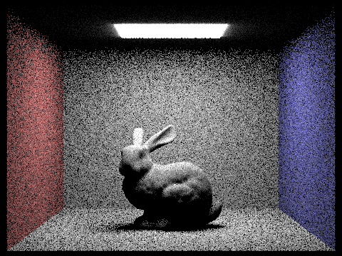 |
When rendered with the same settings (16 samples per pixel, 8 light rays) we notice that hemisphere sampling is extremely noisy throughout the whole image while importance sampling created an image with little noise. This is because the light in the scene only covers a tiny portion of the room so there is a low chance that the light gets sampled correctly in hemisphere sampling, which leads to the many dark, noisy pixels in our image. On the other hand, this is not an issue using importance sampling, since we always sample from the light, so we notice that areas such as the walls where there is definitely nothing blocking the light from it seems smooth with minimal noise. However, the edges of the shadow still appear to be a little noisy, and that's because there is more randomness in whether the ray from those points will intersect with the rabbit or not, blocking the light.
| 1 light ray | 4 light rays |
| 16 light ray | 64 light rays |
To implement indirect lighting, we wrote a recursive lighting function. First, we will add the one_bounce_radiance from the given intersection into our L_out. If we have already reached the max ray depth, then we will simply return this. Else, we continue with the rest of the function. We want to use sample the bsdf of the given intersection by calling sample_f, giving us the f value, the w_in, and the pdf. Next we will generate a new ray from hit_p with direction o2w * w_in to represent the next ray we're trying to trace. We will need to set the depth of this new ray to the current ray's depth + 1. Next, we check whether this ray intersects with anything in the BVH. If there is no intersection, then we return the current L_out. If there is an intersection, we use the Russian Roulette to randomly decide whether or not to continue. We set our continuation probability (cpdf) to be a constant 0.7. If we continue, then will continue the recursive call and accumulate it into our L_out. Lastly, we return the final L_out.
| CBbunny | CBSpheres_lambertian |
| Only direct (zero bounce + 1 bounce) | Only indirect (more than 1 bounce, max 5 bounces) |
| 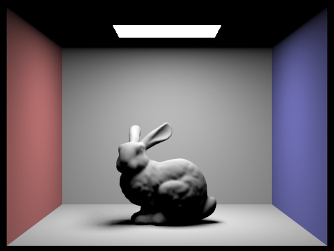 | 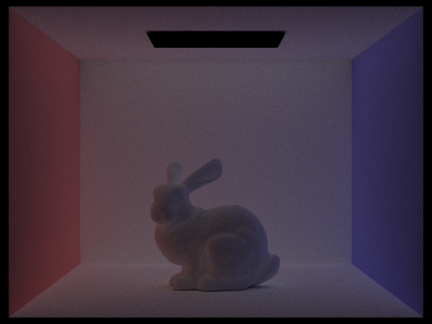 |
| m = 0 | m = 1 |
| 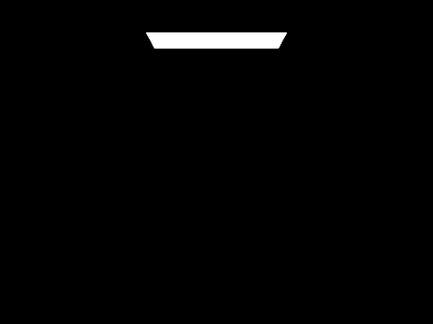 | |
| m = 2 | m = 3 |
| 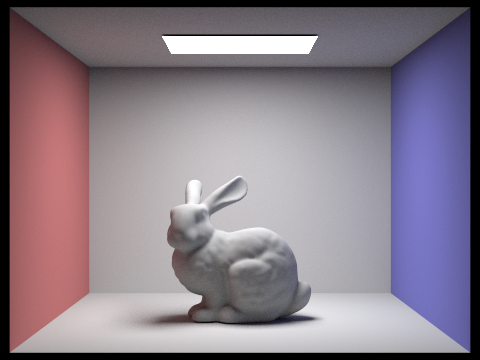 | |
| m = 5 | m = 100 |
| 1 sample | 2 samples |
| 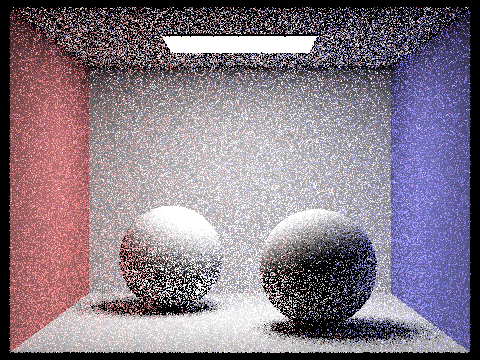 | 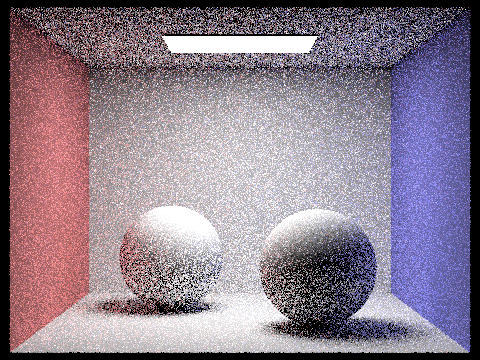 |
| 4 samples | 8 samples |
| 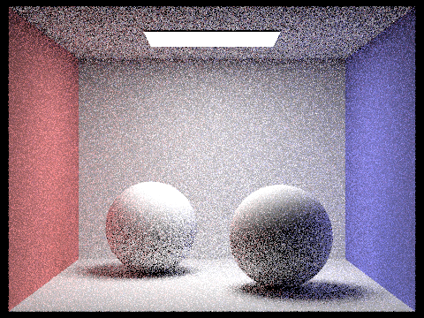 | |
| 16 samples | 64 samples |
| 1024 samples | |
| 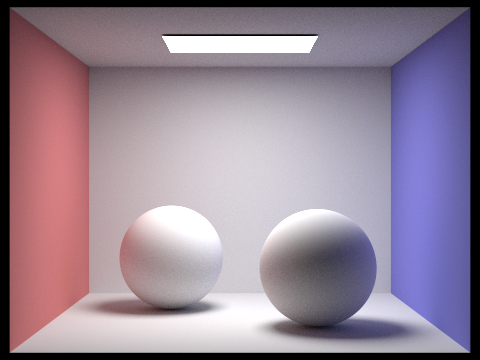 |
Adaptive sampling works by ensuring we are not sending too many rays to pixels that are not very complicated to calculate. We do this by sending sets of rays into the scene and check whether they have returned similar results. For easy parts of the image almost all the rays will be returning the same value, so we can end early and save computation. For more difficult parts, such as an area with a few partial shadows, it requires more work since some rays return light or darkness, and thus we have to iterate through more. Here is our image of a bunny rendered using adaptive sampling and 2024 samples per pixel. As the rate image shows, easier objects like walls have quite few samples than the darker parts of the bunny. This image is not identical to the one on the spec, but is probably due to differences/errors in raytracing in general and not this algorithm. Nevertheless, the basic function of adaptive sampling is functional, in sampling the harder to render regions.
For this project we tried to code together when possible, but due to scheduling some parts had to be done by one person mostly solo. We both worked towards finding and fixing bugs after we had gotten through part 5. While it would have been good to work equally on the entire project, working more on specific sections definitely made those easier to remember and understand. Overall we have gained a sense for the basic rendering pipeline, and certain efficiency improving methods.